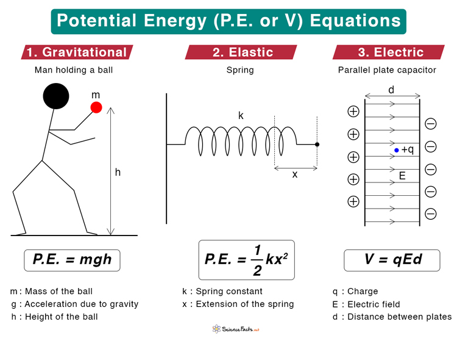

Potential energy is everywhere in our lives. When your fingers hover above your keyboard, they have potential energy. The spring in your ballpoint pen has potential energy. Your electrical appliances have potential energy. When you cook a delicious dish on the stove, you are using the potential energy of your ingredients! This is fine and dandy and all, but what is potential energy and how does it work? We're going to go through the different types of potential energy today and tell you! But in general, you should know that potential energy is stored energy--energy that has the POTENTIAL to become energy that affects the physical world.

What if one day you woke up and asked yourself questions such as: From what height will a bowling ball dropped on a desk break said desk? Exactly how heavy should our bowling ball be (there are 5 pound bowling balls out there!). These questions deal with a little something called GRAVITATIONAL potential energy. he energy a ball has because its it the air. That's why its potential!
Quick Question---have you ever dropped a glass before? chances are that you have, and chances are that if it dropped onto the floor--glass broke. Do you think that if you had been crouched on the floor and held the glass only a millimEter above the floor that it would have shattered?? No! It would not have. That's because the higher a glass is, the higher its gravitational potential energy is.
Now let's make an assumption about what will happen to the desk if we drop a 1000 pound ball onto it? It would likely be crushed instantly, right? Because heavier things exert a greater force. Now let's take a look at the potential enrgy formula so w can see why this is.
Gravitational potential energy is measured (in Joules) with the formula:
GPE = m x g x h
You can see from this formula why height increases potential and why a heavier object eaves more of an impact when fropped rather than one with less mass. The moment we actually drop the object with this potential energy, the PE turns into a KE (The potential energy calculated is changed to the kinetic energy of the object).
The odds are that you have probably stretched a rubber band in your life. What happened if you let the rubber band go after stretching it? It returned back to its original shape. Elastic potential energy is the energy that things have when they are stretched or compressed away from their original shape. The farther you stretch a rubber band, the higher its elastic potential energy. Stretch the rubber band over to the left and give it a try! The formula for elastic potential energy is:
Elastic potential energy is measured (in Joules) with the formula:
EPE = kx^2/2
If your car uses gasoline, there is a pretty high chance that it uses an internal combustion engine. How does this rel
Elastic potential energy is measured (in Joules) with the formula:
EPE = kx^2/2
If your car uses gasoline, there is a pretty high chance that it uses an internal combustion engine. Gasoline has chemical potential energy. This is energy contained in the bonds of atoms that is released when they react with something and break those bonds. Gasoline has enough potential energy to push down a piston when it goes through combustion.
There's no easy way to show this in action, so we'll just go ahead and show you how a combustion engine works with the diagram to the left. Every time the piston is pushed down, that is the result of potential energy in gasoline being converted to kinetic energy. There's really no single formula to calculate chemical potential enrgy, as that depends on some complicated thermodynamics stuff that we will not get into. You now know that the potential energy of most flammable substances is b
Elastic potential energy is measured (in Joules) with the formula:
EPE = kx^2/2